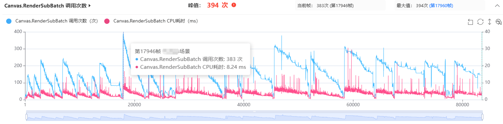
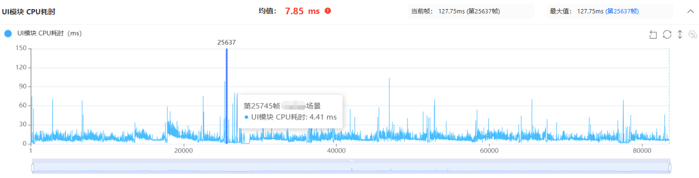
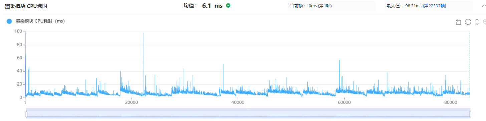
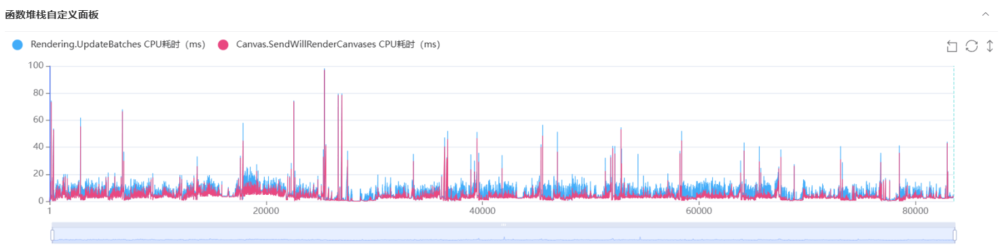
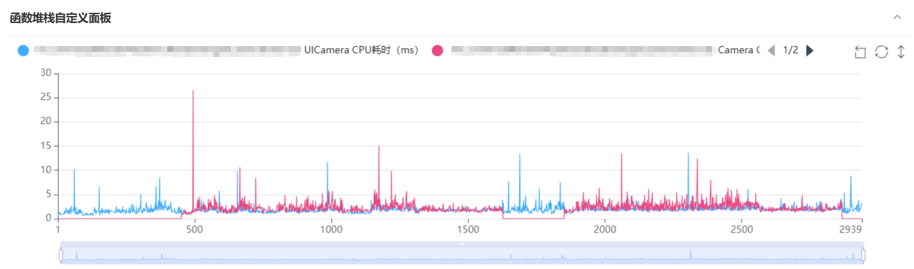
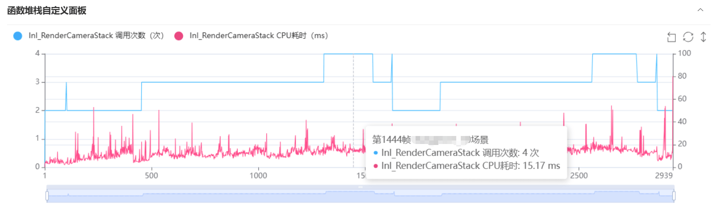

1）UI简单，DrawCall为何接近400
2）只显示一个模型的Camera，为何耗时仍然很高
实战案例一：UI简单，DrawCall为何接近400
Q：我们在测试过程中发现，部分玩法画面从视觉上看并不算复杂，但运行时的UI相关开销却比较高。画面中并没有直观可见的大量复杂内容，为什么UI相关开销还是比较高？这类问题应该从哪些方向继续定位？
A： 这个问题的关键在于，UI画面的视觉复杂程度和实际渲染开销并不是完全对应的。开发者通常会根据画面中能看到多少图片、文字和控件来判断UI压力，但UGUI的渲染成本还会受到绘制批次数量、UI元素组织方式以及更新频率等因素影响。即使最终画面看起来并不拥挤，只要UGUI产生了大量独立的绘制批次，渲染提交开销同样会明显升高。
从UWA GOT Online报告可以看到，渲染模块中的Canvas.RenderSubBatch调用次数区间峰值达到394次。在这份报告的分析口径中，该节点的调用次数可以用来观察相应帧中的UGUI DrawCall数量变化。极端情况下，项目的UGUI DrawCall数量达到300～400的水平，说明UI侧需要提交的绘制批次已经处于较高水平。

这里需要注意，UGUI DrawCall较高，并不等于画面中一定存在大量可见控件。场景中的部分玩法表现可能通过UI组件实现，再叠加UI特效、TMP文本等内容后，即使画面看起来并不复杂，实际参与渲染和更新的UI对象仍可能很多。至于具体哪些元素破坏了合批，目前仅凭报告还无法直接确定，需要结合项目结构和渲染调试数据继续确认。
同时，该问题也反映在CPU侧的UI处理开销上。UI模块CPU耗时平均达到7.85ms，说明它不仅带来了较多渲染批次，同时也占用了较多CPU时间。对于目标帧率为60FPS的项目，一帧总预算约为16.67ms，UI模块长期占用接近8ms，会明显压缩逻辑、动画和其他渲染工作的执行空间。

从整体曲线来看，渲染模块和UGUI相关耗时的变化趋势非常接近。这种相关性说明，当前渲染开销的波动与UI侧存在较强关联，排查时不能只停留在渲染模块，还需要继续查看UI更新流程。

在UI模块中，主要耗时入口是UpdateBatches。该流程负责处理UI元素更新和渲染批次整理。当图片颜色、文本内容或其他UI属性发生变化时，相关Canvas需要更新对应的渲染数据。UI Particle、TMP等相对复杂且更新频繁的对象，也可能增加UI更新开销。
如果需要进一步定位具体是哪些UI元素频繁触发Canvas更新，可以在Canvas.SendWillRenderCanvases相关流程中进行插桩，在运行时记录触发更新的UI对象，从而找到持续触发Canvas刷新的元素。定位到具体对象后，再结合UI层级、更新频率和使用方式进行针对性优化。具体实现方式可以参考雨松MOMO对UGUI网格重建定位的分析方法：《UGUI研究院之找到具体某个引起了网格重建的UI元素(三十二)》。

如果动态UI和大量静态UI混合在同一个Canvas中，少量元素变化还可能扩大更新影响范围。因此，优化不能只停留在"删掉一些UI"，而应分别处理绘制批次和更新成本：一方面结合渲染调试数据检查各类UI元素的合批情况，确认是否存在不必要的批次拆分；另一方面定位高频变化的UI对象，将需要频繁更新、激活或隐藏的内容与静态UI适当拆分，缩小每次更新影响的范围。
实战案例二：只显示一个模型的Camera，为何耗时仍然很高
Q：项目中为了避免特定模型受到近裁剪面的影响，单独增加了一个Camera，用于控制该模型的显示。这个Camera只在特定玩法场景中启用，也只负责该模型的渲染。在一些近距离显示场景中，如果模型距离Camera过近，可能会受到近裁剪面（Near Clip Plane）的影响，导致模型部分区域被裁切或无法正常显示。在本项目中，为了解决这一显示问题，通过额外Camera调整裁剪范围，对该模型进行独立渲染。但从UWA GOT Online报告来看，这个Camera在整个测试过程中的平均耗时已经接近常驻的UI Camera。明明只渲染一个模型，为什么仍会产生这么高的开销？这种情况应该如何优化？

A： 为了满足特殊显示需求，增加额外Camera是比较常见的做法，但Camera带来的成本并不只取决于它最终绘制了多少个物体。即使最终画面中只有少量内容，新增Camera仍需要单独完成渲染准备、可见性判断、渲染队列处理和指令提交等流程。因此，显示内容数量并不完全等同于Camera自身的渲染成本。
从UWA GOT Online报告的Stacks节点可以看到，常规场景中存在两个Camera，进入特定玩法后增加到三个，过场阶段又增加到四个。通过Camera数量的变化，可以快速确认额外Camera在哪些场景中启用，并判断数量是否符合预期。

新增Camera仅用于显示单个模型，但平均耗时已经接近一直存在的UI Camera。虽然两者承担的功能不同，不能仅凭耗时接近就认定Camera配置存在异常，但对于这种额外Camera来说，这部分成本已经不能忽略。
排查时，可以先查看对应Camera的耗时堆栈，确认Culling等相机管线节点占用了多少时间，再分别测试保留原始配置、调整Culling Mask和完全关闭Camera三种状态，从而区分模型渲染成本和Camera额外流程带来的开销。
Camera配置也需要逐项核对。阴影、后处理、Occlusion Culling、独立RenderTexture等功能是否确有必要，都可能影响最终成本。过场Camera启用后，还要确认主场景Camera和额外Camera是否仍在继续渲染，避免画面已经被覆盖，后方Camera却仍然执行完整流程。
优化时，应优先控制Camera的启用时机，只在该模型确实需要独立显示时开启，并关闭与当前显示需求无关的功能。完成配置精简后，如果耗时仍然较高，再结合项目使用的渲染管线，评估是否可以将该模型纳入已有Camera渲染流程，或采用Renderer Feature等方式替代额外Camera。
以上分析并不意味着额外Camera一定不能使用。真正需要关注的是，它带来的画面收益是否与性能成本匹配。当一个仅用于显示单个模型的Camera，其平均耗时已经接近常驻UI Camera时，就应将其列为重点排查对象，避免为了局部显示需求，长期承担一套额外的渲染流程。